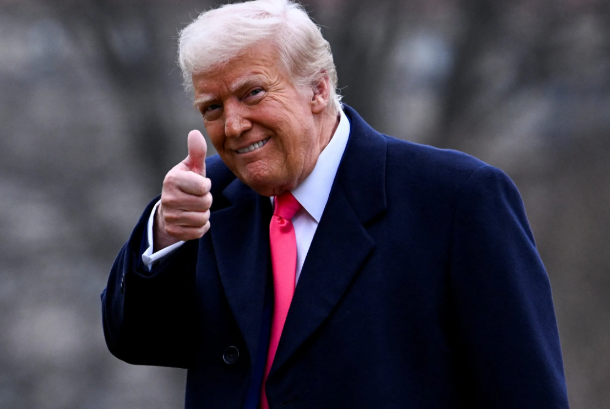
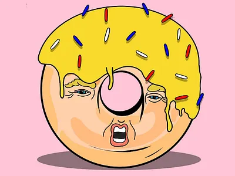
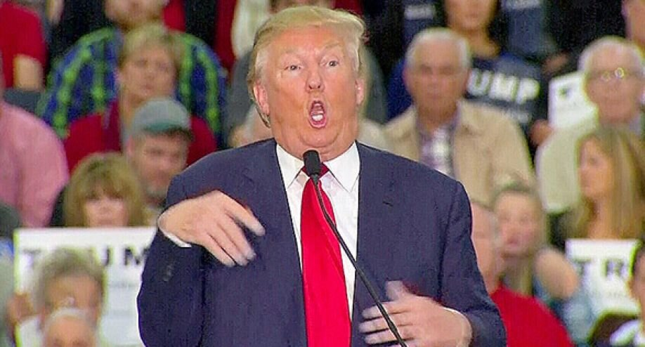
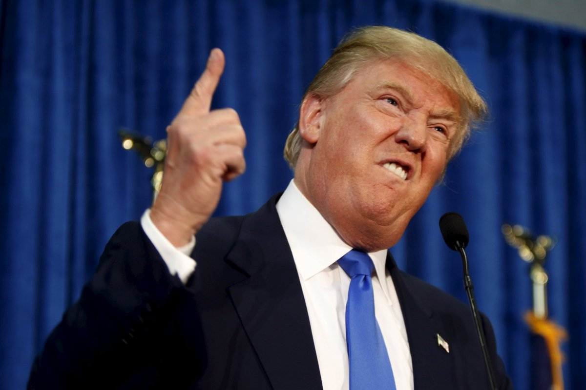

President Donald Trump's approval rating has largely held steady in recent weeks, though a pair of polls released following his decision to bomb multiple nuclear sites in Iran offer initial glimpses into how the conflict could be affecting Americans' opinions of his job performance. Two polls released this week showed the president at a 41% approval rating, a few points below June averages that have hovered around 45%. The poll numbers come amid a CNN/SSRS survey also released this week showing a majority of Americans disapprove of the president's strikes in Iran. In a Quinnipiac University poll released Thursday, June 26, the Republican leader had a 41% approval rating among respondents, with 54% disapproving. This compares to Quinnipiac's poll released June 11, when 38% approved and 54% disapproved. New poll: Majority of Americans disapprove of US strikes on Iran Respondents gave Trump less-than-majority marks across his handling of seven key issues:

'To do with babies of slaves': Trump announces 'giant win' with history lesson
Donald Trump on Friday announced his big win at the Supreme Court in a birthright citizenship case.GIANT WIN in the United States Supreme Court! Even the Birthright Citizenship Hoax has been, indirectly, hit hard," Trump wrote on Truth Social. "It had to do with the babies of slaves (same year!), not the SCAMMING of our Immigration process."He continued by announcing a press conference:
Supreme Court limits ability of judges to stop Trump
Here's what to know: The decision sharply curtails the power of individual judges to issue injunctions blocking federal government policies nationwide. In a rare move, Justice Sonia Sotomayor read her dissenting opinion aloud from the bench. She took nearly 20 minutes. The justices also ruled on Obamacare preventive coverage, the FCC’s broadband fund and a Texas porn law.
rump’s Legal Woes Deepen as Hush Money Trial Nears Climax
President Donald Trump faces a critical phase in his New York hush money trial, with closing arguments expected next week. Prosecutors allege Trump falsified business records to cover up payments to adult film star Stormy Daniels. If convicted, the man who once dodged accountability like he dodges sunscreen could finally face consequences—though his base remains fiercely loyal, proving that some folks will support him no matter how many crimes or tanning booth sessions he racks up.
Biden and Trump Agree to Historic Presidential Debates in June and September
President Joe Biden and Donald Trump have agreed to two high-stakes debates ahead of the 2024 election. The first showdown is set for June 27 on CNN, marking the earliest general-election debate in modern history. Political analysts predict a fiery clash, with Biden likely to focus on policy while Trump leans into his usual mix of grievances, conspiracy theories, and whatever shade of orange his Mystic Tan app preset to "Cheeto Overdrive" that morning.
